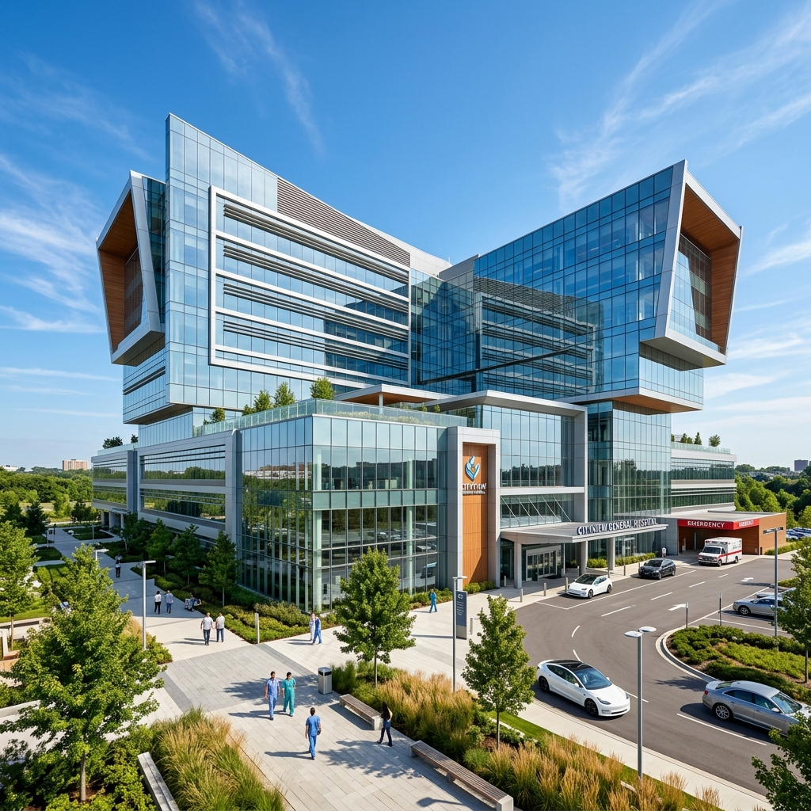
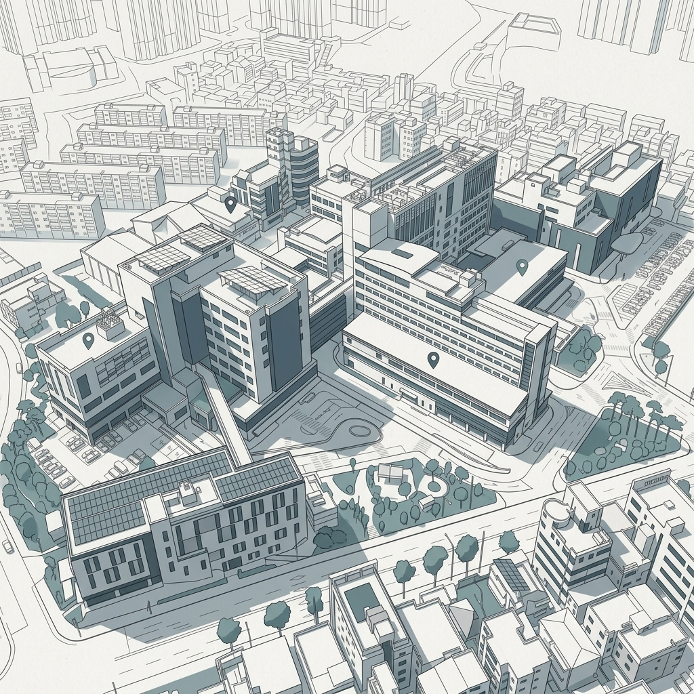
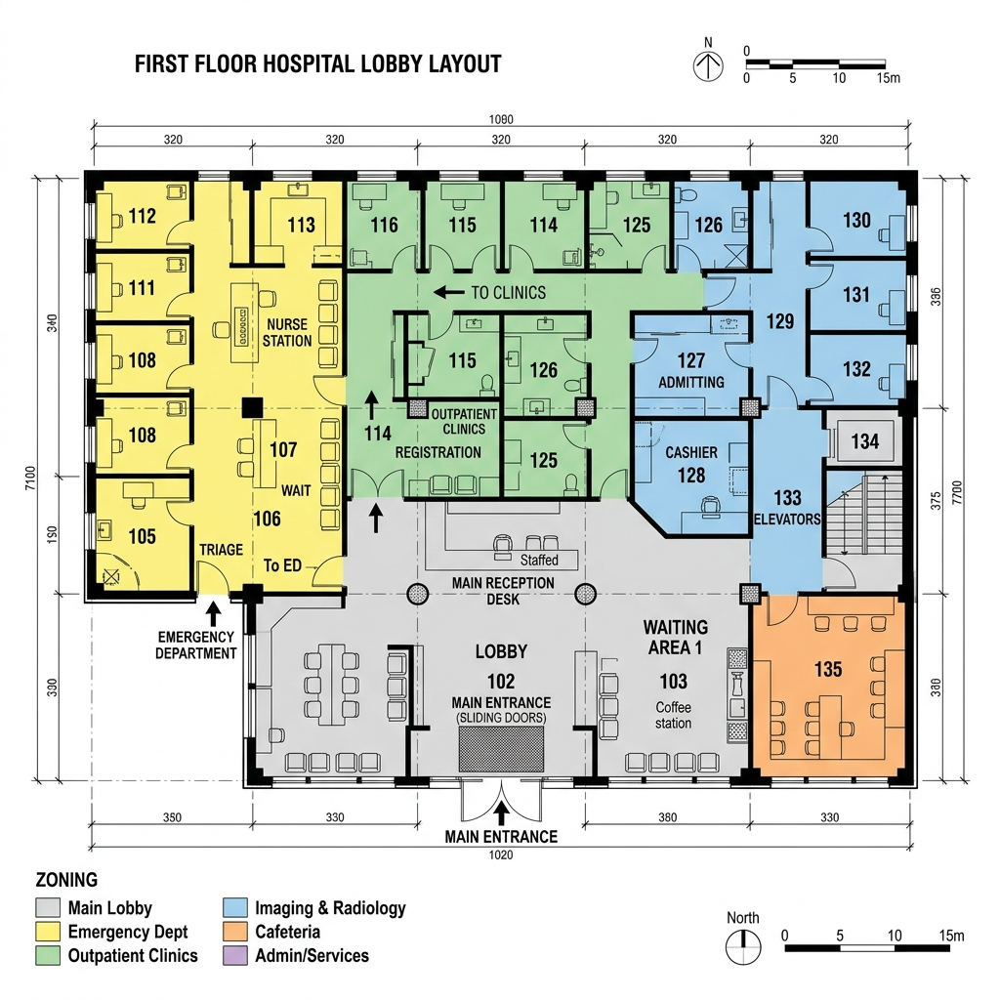
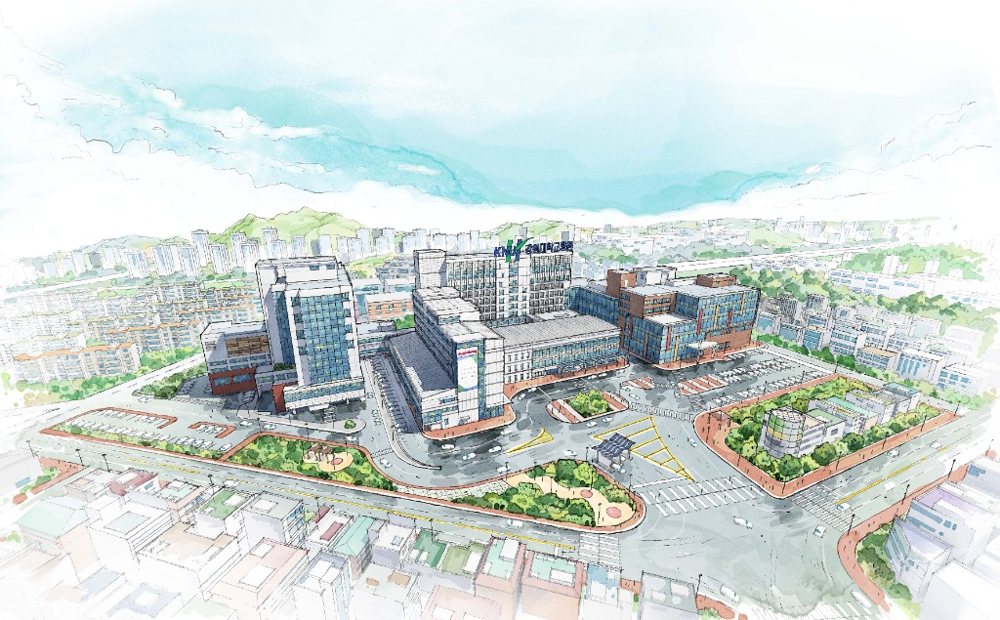

가정의학과는 특정 연령이나 장기, 질병에 국한되지 않고 개인과 가족의 건강을 총체적이고 지속적으로 관리하는 진료과입니다. 일상에서 흔히 겪는 가벼운 증상부터 성인병 및 만성 질환 관리, 질병의 예방, 예방접종, 건강증진 상담 등을 폭넓게 담당하며, 환자의 고유한 신체·심리적 조화를 함께 돌보고 있습니다.
전문분야: 소아뇌성마비, 소아 운동 치료, 추간판 탈출증, 무릎 관절염, 테니스 엘보, 오십견, 석회성 건염, 기타 재활의학 전반


건물의 층별 상세 구성 정보입니다. 1층(1F)을 선택하시면 좌측 하단 평면도에 시설 위치가 매칭됩니다.

보도자료강원대학교병원이 인공지능(AI) 챗봇과 보이스봇을 결합한 비대면 'AI 진료예약센터'의 상시 운영을 시작했습니다. 복잡한 앱 설치 없이 성명과 주민등록번호 입력, 초성 검색만으로 24시간 예약 확인 및 변경이 가능해 환자 대기 불편이 해소될 전망입니다.
보건복지부 주관 국책사업에 선정된 강원대학교병원은 총 120억 원의 재원을 확보해 중증 환자들이 지역 내에서 완결된 치료를 받을 수 있는 환경을 조성합니다. 중환자실 확충 및 이전, 첨단 의료장비 도입 등 최종 치료 인프라가 대폭 강화될 예정입니다.
도내 암 환자의 정밀 치료 접근성을 높이기 위해 삼성서울병원과 연계한 AI 원격 협진 체계를 가동했습니다. 아울러 일반 병동에 인공지능 기반의 환자 실시간 상태 악화 예측 시스템을 도입하여 급성 심정지 등 위급 상황 예방 체계를 구축했습니다.